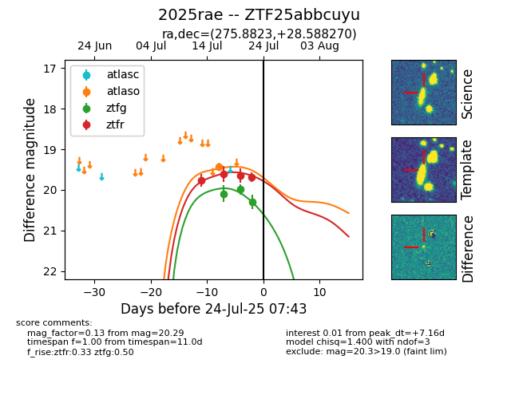

Target ZTF25abbcuyu at 2025-07-24 07:43, see:
FINK: fink-portal.org/ZTF25abbcuyu
Lasair: lasair-ztf.lsst.ac.uk/objects/ZTF25abbcuyu
ALeRCE: alerce.online/object/ZTF25abbcuyu
TNS: wis-tns.org/object/2025rae
YSE: ziggy.ucolick.org/yse/transient_detail/2025rae
alt names
ZTF25abbcuyu (ztf,fink)
2025rae (tns,yse)
coordinates:
equatorial (ra, dec) = (275.8823,+28.58827)
galactic (l, b) = (56.3357,+18.24753)
photometry
last atlaso=19.44, ztfg=20.29, ztfr=19.69
1 atlaso, 3 ztfg, 4 ztfr detections
